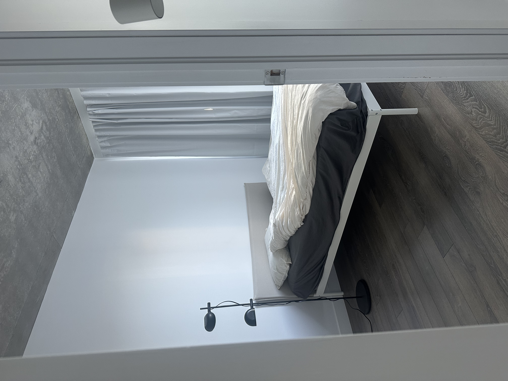

Spatial study / Jarbin Wang
Between
ash and ice.
A study in quiet contrast.
Iceland’s black-sand shores, ice fields, and weathered gravel, translated into a restrained interior language.

Black sand against pale ice. Gravel under a cold sky. This composition draws on the tension between Iceland’s dark volcanic ground and its glacial expanses: a narrow palette, a quiet atmosphere, and surfaces that retain their grain.
Charcoal anchors the space; whites soften its edges. Exposed concrete and rumpled textiles bring roughness and softness into the same frame. The intention is restraint, with texture doing the work of ornament.
Furnishings sourced primarily from IKEA. Familiar, everyday pieces are brought together through tone, proportion, and material contrast.